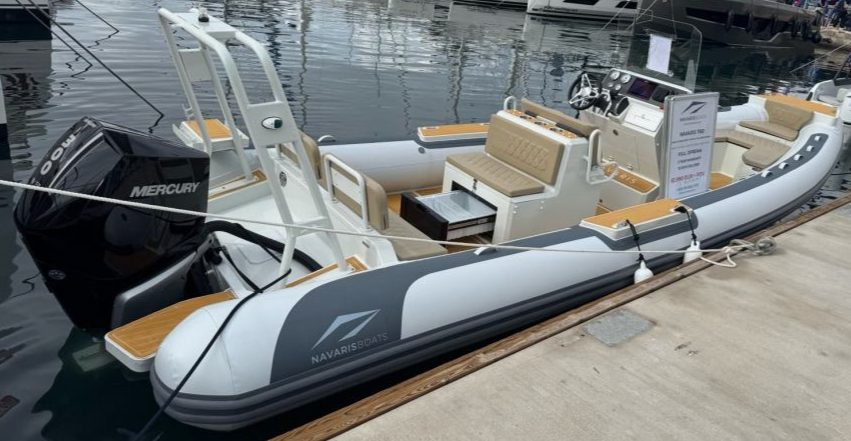

NAVARIS 7.6M
MERCURY VERADO 300 KS V8
HYPALON * 5 MM ALUMINIJ 5083
HLADNJAK * EL. VITLO * HARDTOP * SIMRAD
OZVUČENJE * SOLARNI PANEL * SPREMNIK GORIVA 300 L * TUŠ
PLOVILO + MOTOR
JAMSTVO 3 GODINE * ISPORUKA ZA 15 DANA
61.990 EUR + PDV
POTPUNO NOVO